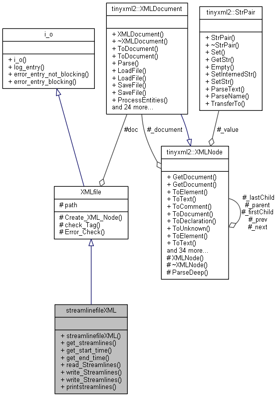
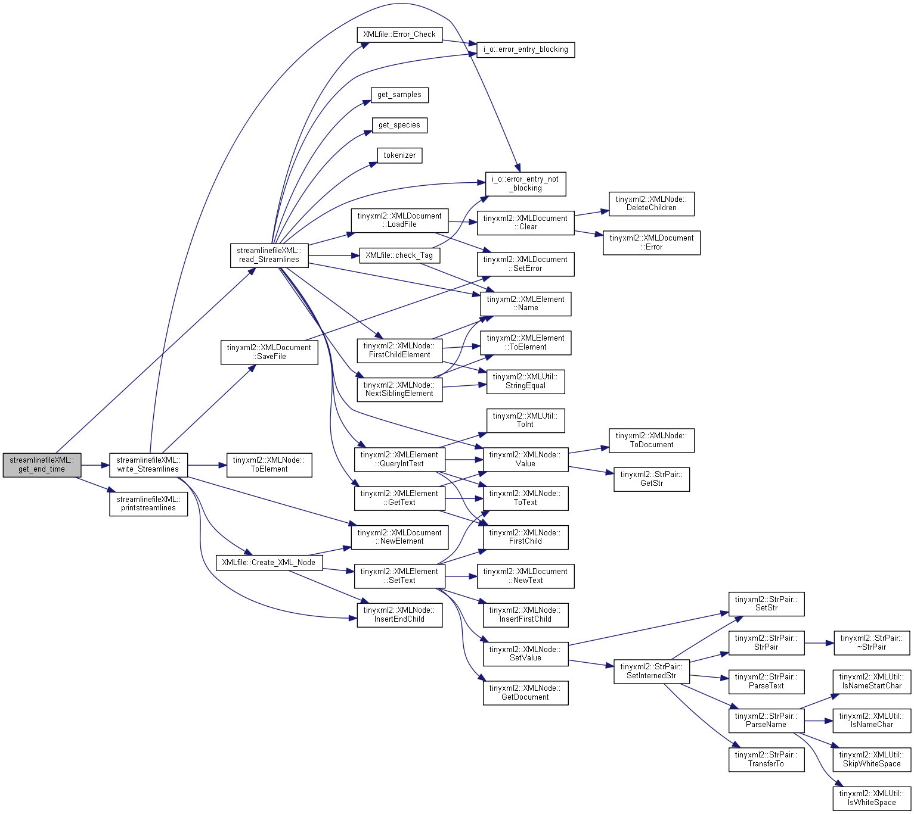
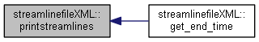
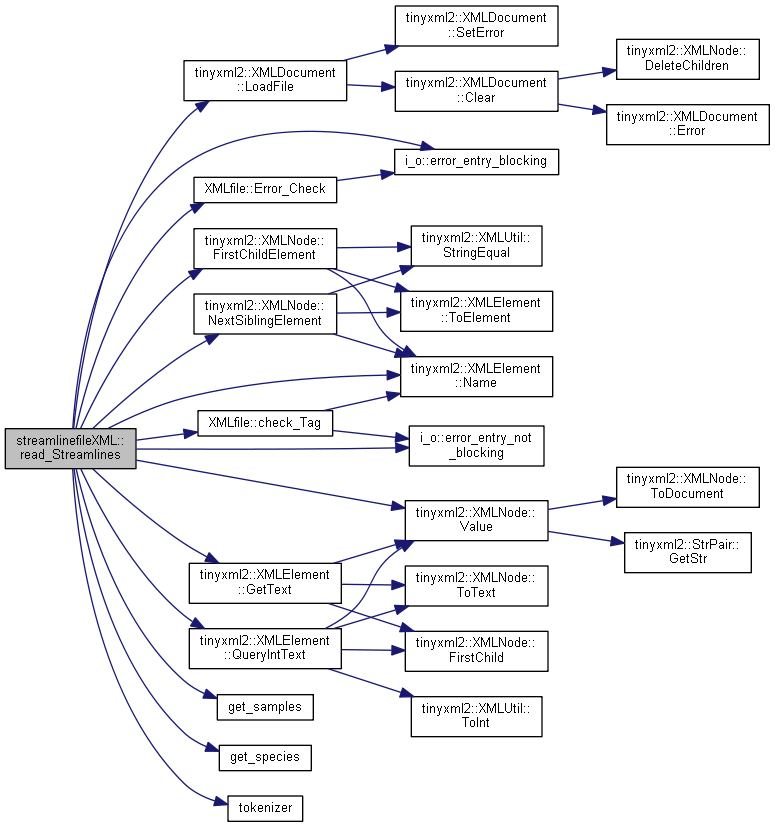
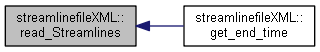
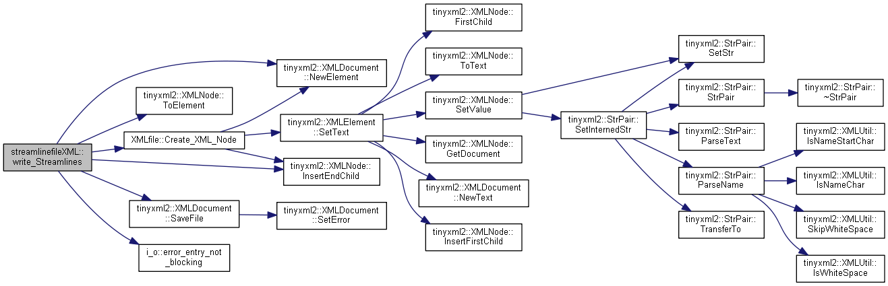
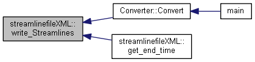
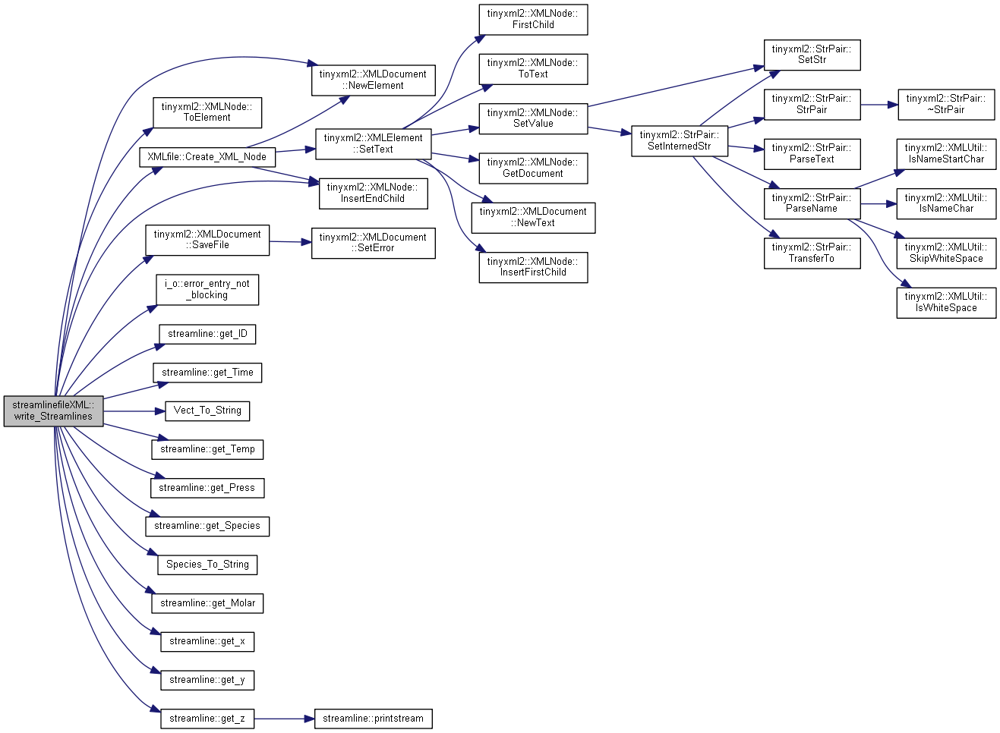

#include <streamlinefileXML.h>
Inheritance diagram for streamlinefileXML:

Collaboration diagram for streamlinefileXML:

Public Member Functions | |
| streamlinefileXML (std::string _path, std::vector< streamline > &_streams) | |
| std::vector< streamline > | get_streamlines () const |
| Return Streamlines from file. More... | |
| double | get_start_time () const |
| Return start time. More... | |
| double | get_end_time () const |
| Return end sampling time. More... | |
| void | read_Streamlines () |
| extract Streamlines from XML file More... | |
| void | write_Streamlines (std::vector< streamline > &_streamlines, double _start_t, double _end_t) |
| void | write_Streamlines (std::string _path) |
| void | printstreamlines () |
| Print Streamlines. More... | |
 Public Member Functions inherited from i_o Public Member Functions inherited from i_o | |
| i_o () | |
| Contructor. More... | |
| void | log_entry (std::string _entry) |
| void | error_entry_not_blocking (std::string _error) |
| void | error_entry_blocking (std::string _error) |
Additional Inherited Members | |
| Protected Member Functions inherited from XMLfile | |
| void | Create_XML_Node (XMLElement *root_e, std::string TAG, std::string text) |
| bool | check_Tag (XMLElement *e_ptr, std::string TAG) |
| void | Error_Check (bool status, std::string TAG) |
| Protected Attributes inherited from XMLfile | |
| std::string | path |
| XML file Path. More... | |
| XMLDocument | doc |
| XML file (from tinyxml) More... | |
Constructor & Destructor Documentation
§ streamlinefileXML()
| streamlinefileXML::streamlinefileXML | ( | std::string | _path, |
| std::vector< streamline > & | _streams | ||
| ) |
Constructor (reads and stores the XML File)
- Parameters
-
string path: Path of the XML file
Get XML File
Member Function Documentation
§ get_end_time()
|
inline |
Return end sampling time.
Here is the call graph for this function:

§ get_start_time()
|
inline |
Return start time.
§ get_streamlines()
|
inline |
Return Streamlines from file.
§ printstreamlines()
| void streamlinefileXML::printstreamlines | ( | ) |
Print Streamlines.
Here is the caller graph for this function:

§ read_Streamlines()
| void streamlinefileXML::read_Streamlines | ( | ) |
extract Streamlines from XML file
Here is the call graph for this function:

Here is the caller graph for this function:

§ write_Streamlines() [1/2]
| void streamlinefileXML::write_Streamlines | ( | std::vector< streamline > & | _streamlines, |
| double | _start_t, | ||
| double | _end_t | ||
| ) |
write streamlines (defined outside the object) to file
- Parameters
-
std::vector<streamline>& streamlines reference to streamlines container double _start_t: sampling start time double _end_t: sampling end time
Here is the call graph for this function:

Here is the caller graph for this function:

§ write_Streamlines() [2/2]
| void streamlinefileXML::write_Streamlines | ( | std::string | _path | ) |
write streamlines defined inside the object to file
- Parameters
-
std::string _path: output file path
Here is the call graph for this function:

The documentation for this class was generated from the following files:
- NanoDome/Code/Fluent_Link/fluent_link_deliverable/streamlinefileXML.h
- NanoDome/Code/Fluent_Link/fluent_link_deliverable/streamlinefileXML.cpp